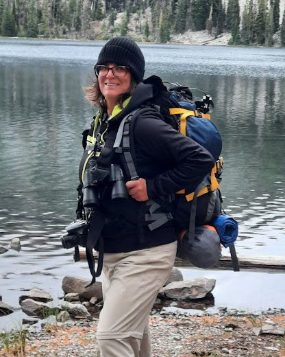
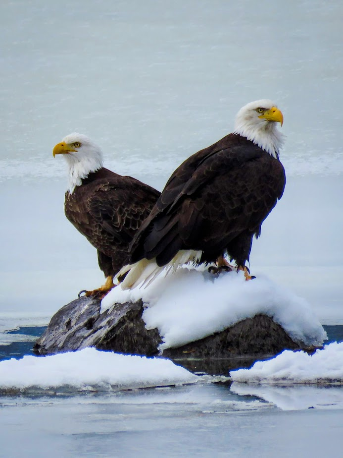
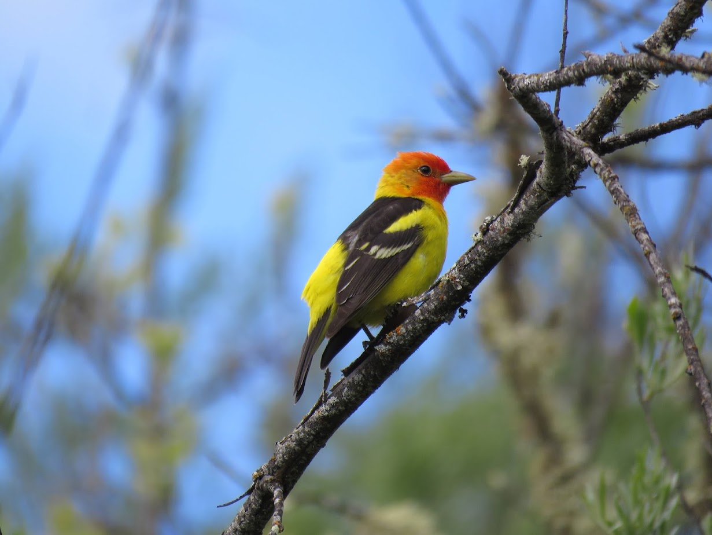

A Little About Me
I'm a lifelong learner, problem solver, and naturally curious person who enjoys discovering how things work and finding connections others might overlook. I recently graduated Summa Cum Laude from Southern Oregon University with a bachelor's degree in Computer Science and certificates in Data Analytics and Web Programming. I'm particularly interested in data science, analytics, and the ways technology can help us better understand and solve real-world problems.
I enjoy a good challenge, especially one that requires a little creativity, persistence, and a willingness to figure things out along the way. Whether I'm exploring a new technology, working through a complicated problem, or learning something completely unfamiliar, I'm energized by the process of turning questions into understanding.
Outside of technology, you'll often find me with a camera, exploring the outdoors and birding. Photography and birding have given me an even greater appreciation for observation, patience, and the details that make each subject unique. I love being outdoors and discovering something new, whether it's spotting a bird I've never seen before or finding a beautiful place to photograph.
Giving back to my community is also an important part of who I am. I spent nearly ten years mentoring women through The Pregnancy Center, building relationships and offering encouragement through different seasons of life. I also volunteered as a Court Appointed Special Advocate (CASA), advocating for children in the foster care system. These experiences have taught me a great deal about listening, meeting people where they are, and recognizing the value of every individual.
I'm someone who enjoys learning, connecting with people, and finding ways to make a positive difference.


